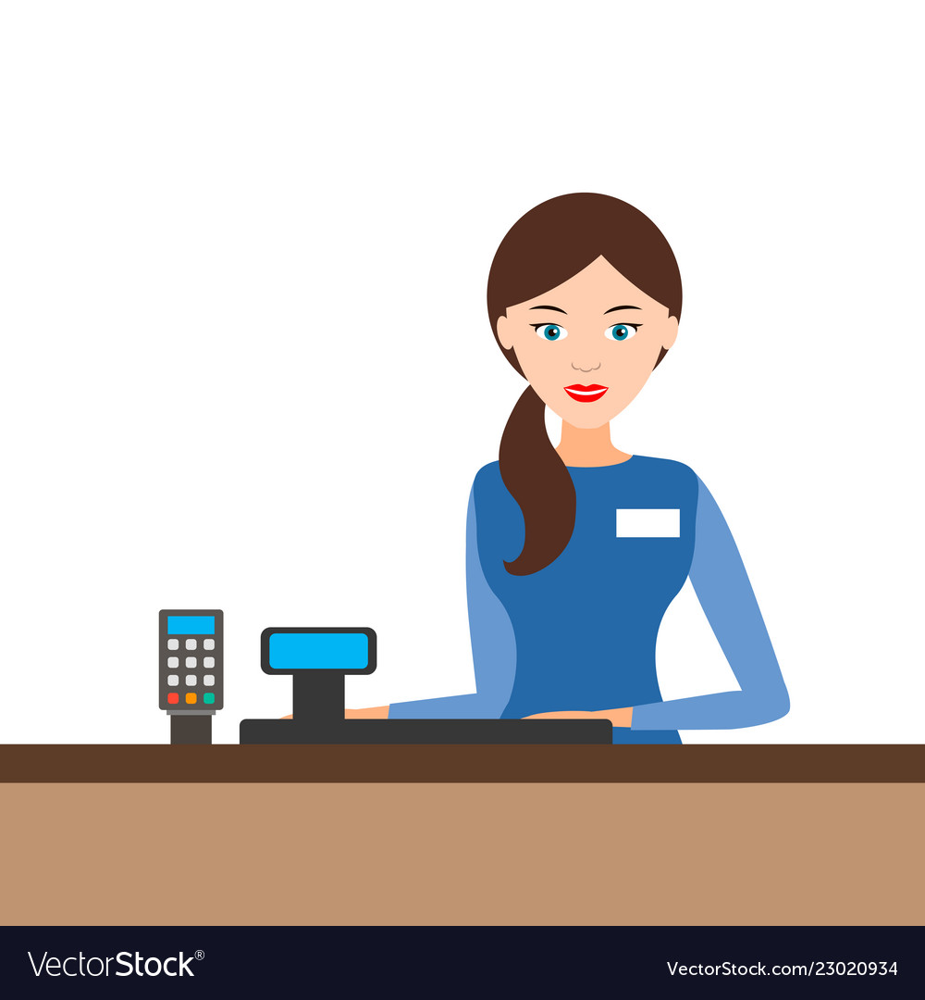

MY WORK EXPERIENCE
PROMOTER

After I graduated from secondary school, I work as a staff promoter at AEON mall. I work about 7 months and gained a lot of information as a promoter. The department that I join is HARDWARE which is quite a large department in AEON mall. I also acknowledge a little bit of talent that myself never realized it until I work here.
CASHIER
After I work 7 months as promoter, I also involved in as cashier at AEON mall. This is because at that time, AEON mall do not have enough cashier staff to cover during holiday and weekend. My department leader decide to make me become one of the cashier team and I agree with that because I want to experience something new. It was quite tiring for me because I cannot sit or rest at all because of the long line of customer. Hence, I also feel happy because the customer like my services and says that I like to smile alot. I happy when hear a compliment like that and it make my day positive.